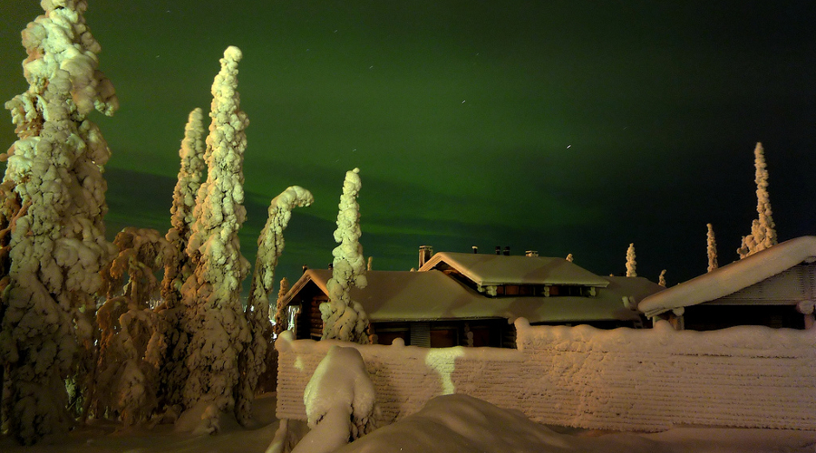
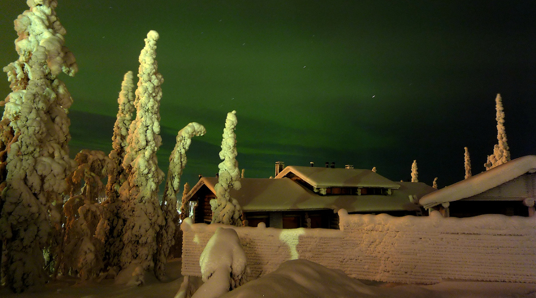
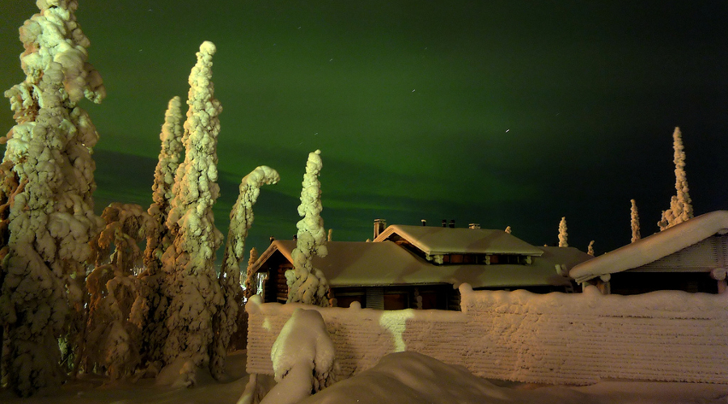

Full width, default settings
 

Slideshow module designed for modern websites. Light-weight dependencies, no jQuery or other frameworks, fully customizable, and completely destructable when no longer needed.
Use npm, it is awesome:
npm install auruAlternatively get the "build" folder from GitHub and put the files inside somewhere in your project.
If you use webkit or browserify:
var Auru = require('auru');Or use the standalone build which will expose the Auru global:
<script src="auru.js" />This page is un-minified, just right-click and select "View Page Source" to see how any of these examples work.

Check your browser's console to see events as they are emitted. Also try swiping left or right on a touch device.
Current slide: 1
Slides don't have to be images.
This slideshow will progress automatically until you interact with it.
The last slide is an image, you can mix element types.
Swiping on touch devices still works, too.
In order of appearance: (yes there are multiple photos with the same title, that is not a typo)
"Northern Lights" by Timo Newton-Syms: CC BY-SA 2.0
"Aurora Borealis in Kakslauttanen, Finland" by Kelvin Lim: CC BY 2.0
"Northern Lights" by Timo Newton-Syms: CC BY-SA 2.0
"Aurora Borealis" by Andi Gentsch: CC BY-SA 2.0
Copyright © 2015 Paul Rayes
Code licensed under Apache-2.0